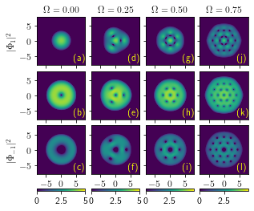
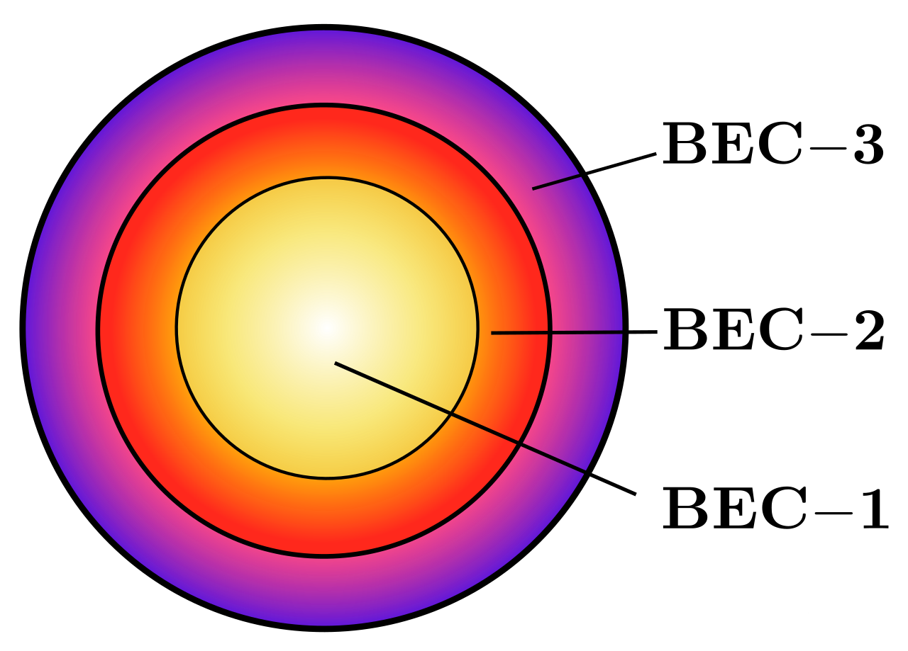

Research

Multi-component BEC Instabilities
Rayleigh–Taylor, Kelvin–Helmholtz, and counter-superflow instabilities at interfaces in phase-separated multi-component condensates.

Dipolar BECs
Vortex nucleation, supersolid states, and light-matter coupling via STIRAP in dipolar Bose–Einstein condensates beyond mean-field theory.

Spinor BECs
Topological excitations, skyrmion dynamics, and spin-orbit coupling effects in spin-1 Bose–Einstein condensates under time-varying fields.

Non-equilibrium BECs
Dynamical pattern formation, coarsening, and collective excitations in quantum fluids driven far from equilibrium.